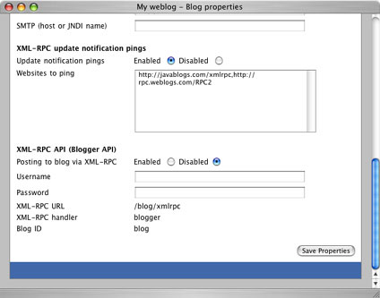

|
Many blog aggregators support the notion of XML-RPC update notification pings that a blog can send when it has been updated. Examples of sites supporting this feature are weblogs.com and javablogs.com. To enable this in Pebble, click the Blog properties link after logging in. Towards the bottom of this page is a section entitled XML-RPC update notification pings where you can enable or disable the feature and specify a comma separated list of sites that should be pinged when you add/edit a blog entry.
If this feature is enabled, an XML-RPC ping is automatically sent to each website you specified whenever a blog entry is added or edited.
|